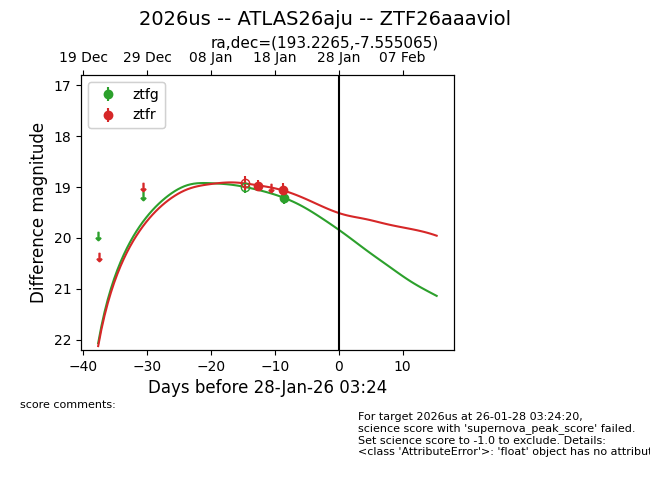
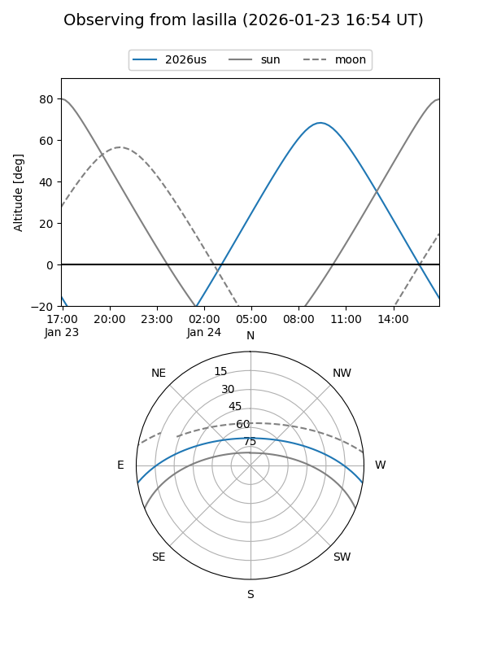
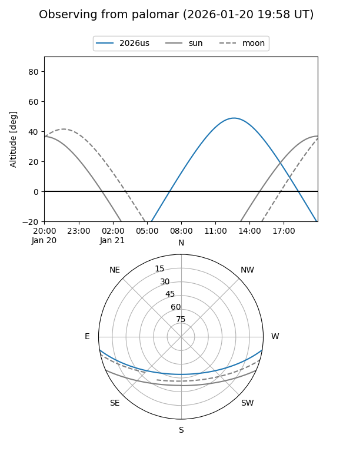
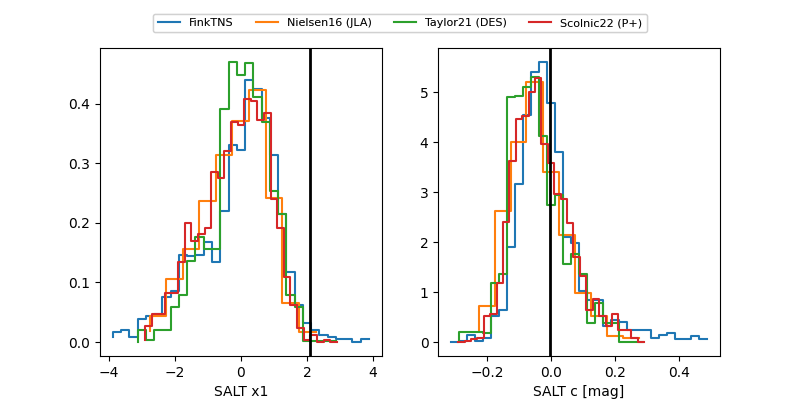

2026us
Target 2026us at 2026-01-24 21:21
Aliases and brokers:
FINK: link
Lasair: link
ALeRCE: link
TNS: link
YSE: link
alt names
ZTF26aaaviol (ztf,fink_ztf)
2026us (tns,yse)
ATLAS26aju (atlas)
Coordinates:
equatorial (ra, dec) = 193.2265,-7.55506
equatorial (HMS+DMS) = 12:52:54.36,-07:33:18.23
galactic (l, b) = (303.5713,+55.31486)
Flags:
Photometry:
last ztfg=19.21, ztfr=19.07
1 ztfg, 2 ztfr detections
Lightcurve

Visibility


Additional plots
